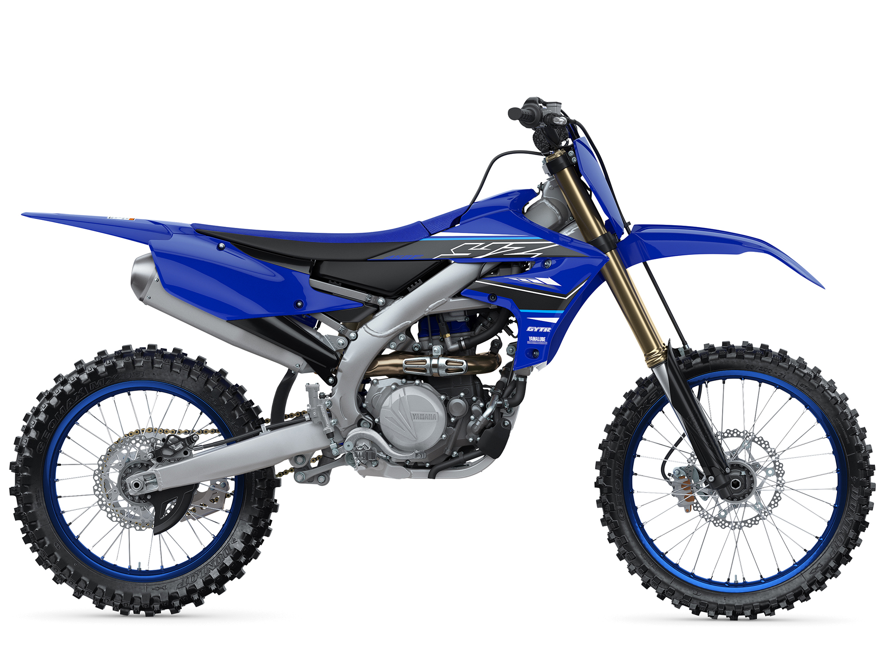

With the best power delivery and suspension performance in the class, the 2022 YZ450F is built to win races. With a compact, powerful engine, thoroughly refined chassis and commanding ergonomics, the YZ450F gives the rider the ability to perform at their best, lap after lap.
